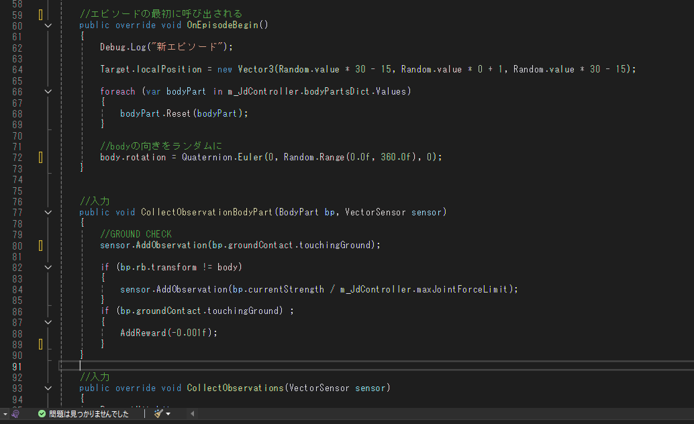
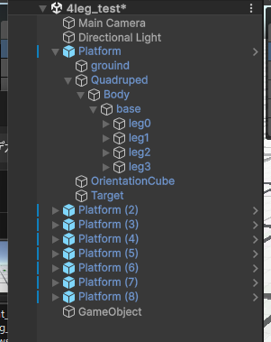
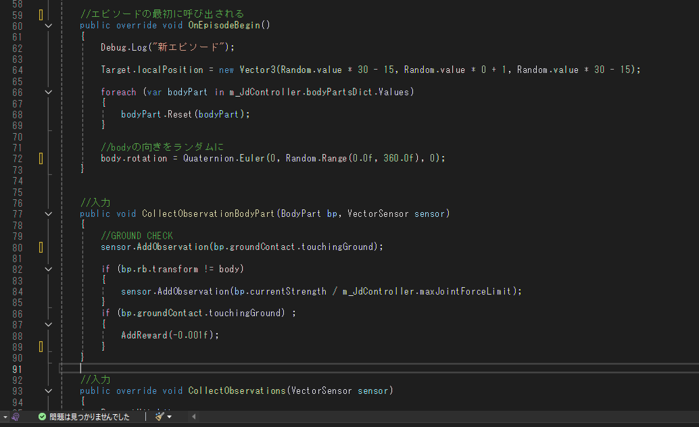
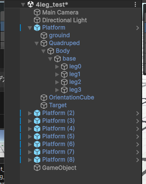

Kaggleセンサデータコンペ 参加中
開始時期：2025/6/8 ～
Kaggleのセンサデータコンペにて、人の行動を加速度・ジャイロセンサから推定するタスクに挑戦中です。

プロジェクト概要
Kaggleの「CMI Sensor Data for Human Activity
Recognition」コンペに参加し、マルチクラス分類モデルの構築に取り組んでいます。現時点では前処理・特徴量エンジニアリングを中心に開発を進行中です。
コンペ開催中のため、規約に則りソースコードや具体的な手法の公開は控えています。
▶ コンペ公式ページ（Kaggle）
解決すべき課題
- 少ないデータで精度を出す
- センサーデータ特有のノイズ
- クラス不均衡データの処理
※コンペ開催中のため、成果物のビジュアル公開は終了後に予定しています。
Kaggle細胞コンペ（BYU Flagellar Motors）
制作期間：2週間
細菌画像からフラジェラー・モーターの位置を検出する物体検出タスクに参加
コンペ概要
BYU主催のKaggleコンペ「Locating Bacterial Flagellar Motors」に参加。細菌の3Dトモグラム画像から、べん毛モーターの位置を正確に検出するアルゴリズムを構築する課題に取り組みました。
▶ コンペ公式ページ（Kaggle）成果と学び
目標としていた上位10%には届きませんでしたが、コンペ終了後も上位者の解法を分析し、推論戦略や検出精度の改善余地について学びました。物体検出タスクにおける後処理の工夫や学習データ拡張の効果を実感することができました。
使用技術・手法
- YOLOv11を用いた物体検出モデルの再学習
- TTA（Test Time Augmentation）による推論強化
- WBF（Weighted Box Fusion）によるボックス統合
- データ拡張：回転、反転、色調変化、モザイク、MixUp、CopyPasteなど
- AdamWオプティマイザ、早期終了などの導入
四足歩行ロボット
制作期間：2週間
Unity ML-Agents による強化学習で歩行を習得する四足歩行ロボットを制作
プロジェクト概要
Unity ML-Agents Toolkit に付属する四足歩行チュートリアルを参考に、自作のロボットモデルを用いた歩行学習を行いました。 脚は十字型に配置されており、平坦な地形上で目標物に向かって効率的に移動することを目的としています。 学習には強化学習アルゴリズム「Proximal Policy Optimization（PPO）」を使用し、基本的な歩行メカニズムの理解と最適化に注力しました。
成果と学び
チュートリアルのモデルほど精度良くは学習できなかったものの、 Unityにおける関節の動きやトルク調整、強化学習における報酬と罰のバランスについて深く学ぶことができました。 強化学習における「学習させたい行動をどう報酬で導くか」という設計力の重要性を実感できました。。
技術的課題と工夫した点
- Unity上での関節構造（Hip/Knee）の組み立てと駆動制御
- トルク制御や回転スケールの調整による安定した歩行の実現
- 報酬設計（地面接触・ターゲットへの接近・移動速度）
- オリジナルモデルの学習安定化とバランス取り
 



ブラックドラゴン
制作期間：2日
Blenderで制作した既存ゲームキャラクターの立体化モデル

プロジェクト概要
スマートフォンゲーム『城とドラゴン』に登場するキャラクター「ブラックドラゴン」をモチーフに、非公式の個人制作として3DCGモデルを制作しました。 2Dイラストしか存在しない状態から立体構造を想像して造形し、 最終的に3Dプリントによるフィギュア出力を目指して制作しました。 Blenderのスカルプト機能を中心に使用しています。
工夫したポイント
細かなパーツは球体や円柱などのプリミティブをベースに作り、整形することで作業効率を上げました。 トゲなどの繰り返し使うパーツは別途モデリングし、コピー＆ペーストで配置を統一。 プリント時にパーツが外れにくくなるよう、細部のサイズや接続部の太さにも工夫を施しました。
技術的な挑戦
- 2次元のイラストから立体構造を想像・補完してモデリング
- Blenderのスカルプト機能を活用した造形表現
- 3Dプリントを前提としたパーツ強度やキャラクターイメージの確保

※本作品は商用利用を目的とせず、あくまで個人の制作活動およびスキル習得の一環として制作したものです。キャラクターの著作権は株式会社アソビズムに帰属します。
イフリート
制作期間：3日
Blenderで制作したゲーム用モデル
デザインコンセプト
『FINAL FANTASY XI』公式サイトに掲載された召喚獣イフリートの設定イラストをもとに、独自のアレンジを加えた3Dモデルを制作しました。
威圧感のあるフォルムを目指し、筋肉の盛り上がりや皮膚のシワ、血管の浮きなど、リアルな肉体表現にこだわっています。
スカルプティング技法
- ダイナミックスカルプトによる荒削りからの成形
- ディテールブラシでの筋繊維や血管表現
制作の工夫
まず頭部を先に完成させたうえで、一般的人体モデルをスケーリングして使用し、全体のバランスを整えながら巨大な体格に調整しました。
威圧感のある存在感を演出するため、時間制約の中でもシルエットの力強さと立体的な造形に重点を置いて制作しました。 最終的にはアニメーション対応を考慮し、四角ポリゴンベースのリトポロジー処理を行っています。
AI当たり屋ゲーム
制作期間：約1週間
Pythonで開発した画像認識を活用したゲーム
プロジェクト概要
YOLOv5を活用し、カメラ映像に映らずにキーボードを操作することを目的とした「
AI当たり屋ゲーム」を開発しました。物体検出AIが“人”を認識するとゲームオーバ
ーになる仕組みで、プレイヤーはAIの目をかいくぐって行動します。
この作品は大学祭で展示し、来場者に体験してもらいました。
プレイヤーがAIを騙そうとする様子や、AIとの駆け引きを見ることができました。
使用技術・手法
- YOLOv5のGitHubにある
detect.pyを活用したAI部分の構築 - OpenCVによるライブ映像の表示と処理
部室スマートキー 保守中
制作期間：2週間
部室の鍵をスマート化し、Discordチャットで遠隔解錠できるシステムを構築しました。
プロジェクト概要
部室の鍵をスマート化し、非接触での解錠を可能にするシステムを開発しました。部活動で普段使用しているDiscordと連携させることで、部員がスマートフォンやPCからチャット操作で鍵の開閉ができるようにしました。
工夫した点・得られた経験
ユーザビリティを重視し、部員が普段使っているDiscordから操作できる設計にしました。また、機構部分のギア設計を後輩と分担しながら進めることで、チーム開発の実践的な経験も得られました。
完成後にもモーターの不具合や設計変更が何度か発生し、そのたびにプログラムを修正する必要があり、柔軟な対応力を養うことができました。
使用した技術
- Discord APIを利用したチャット連動型鍵制御
- PythonとGPIOによるモーター制御
- Raspberry Piによる常時稼働システム
- 3Dプリントの設計・制作（後輩と連携してギア構造を設計）
- 電源投入時に自動でプログラムが実行されるよう設定
アヒルパーカマン
制作期間：1週間
ポリゴン数を抑えて制作した、アヒルパーカーを着た女の子のローポリ人形モデル

制作コンセプト
紫色のアヒルパーカーを着た女の子の人形キャラクターを、ローポリゴンで温かみのある雰囲気に仕上げました。シンプルながらも可愛さのあるデザインを目指しました。
制作プロセス
Blenderを用いて、キャラクターの下書きからモデリング、UV展開、テクスチャペイント、リギング、ボーン強度の設定まで、0から一貫して制作しました。
工夫した点
- ローポリながら可愛らしさを表現する造形
- 手描きテクスチャによる表現力の向上
- 動きを意識したボーンの設置とウェイト設定
魚達の闘争
制作期間：1週間
Unityで制作した2D対戦ゲーム

制作意図・目標
Joy-Conを使ったマルチプレイ体験を通じて、Unityの新Input Systemの理解を深めることを目的としました。
技術的な挑戦
- Unity Input Systemを用いた最大4人のコントローラー接続と動作管理
- キャラクター同士の当たり判定処理とゲームバランス調整
- Joy-Conのスティックとボタンのみで完結する直感的な操作設計
成果
大学祭ではプロジェクターを使用して展示し、来場した子どもたちに大変好評でした。
工夫したポイント
- キャラクターのツノを使って相手を弾き飛ばすという直感的なゲーム設計
- 10秒に一度ボタンで急加速できる駆け引き要素
- 敗北者同士が再戦できるモードを追加し、最後まで楽しめるようにした
- シンプルなルールで説明なしでもプレイ可能なデザイン